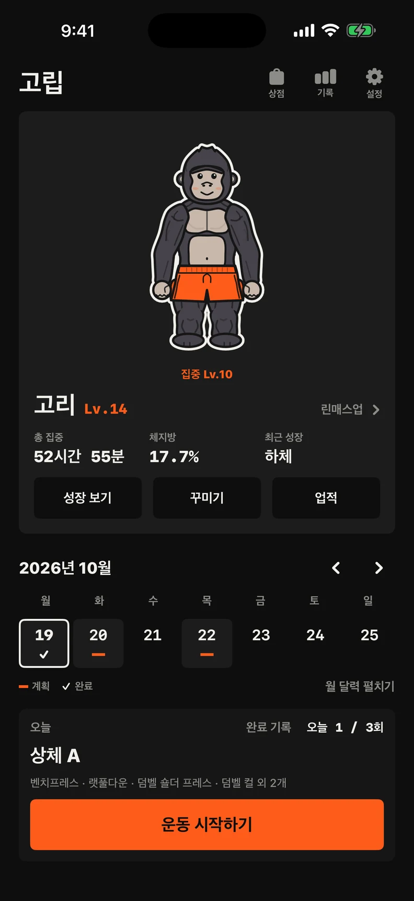
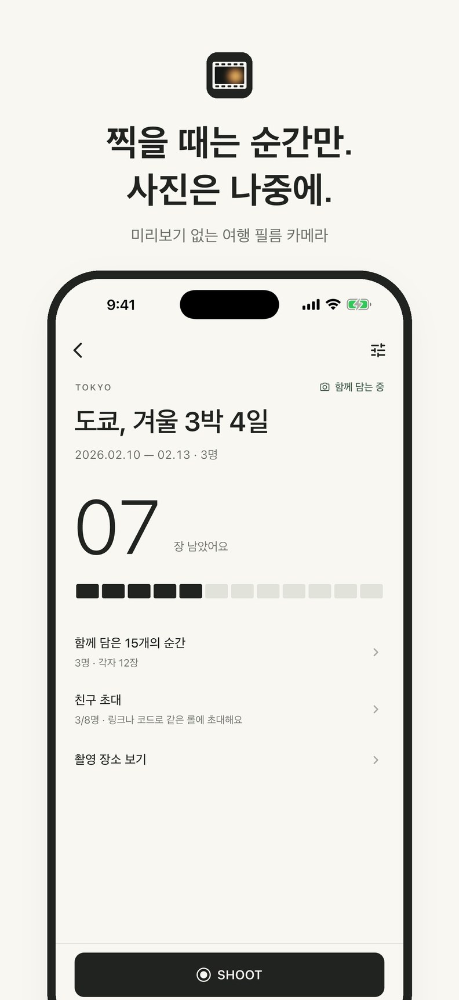
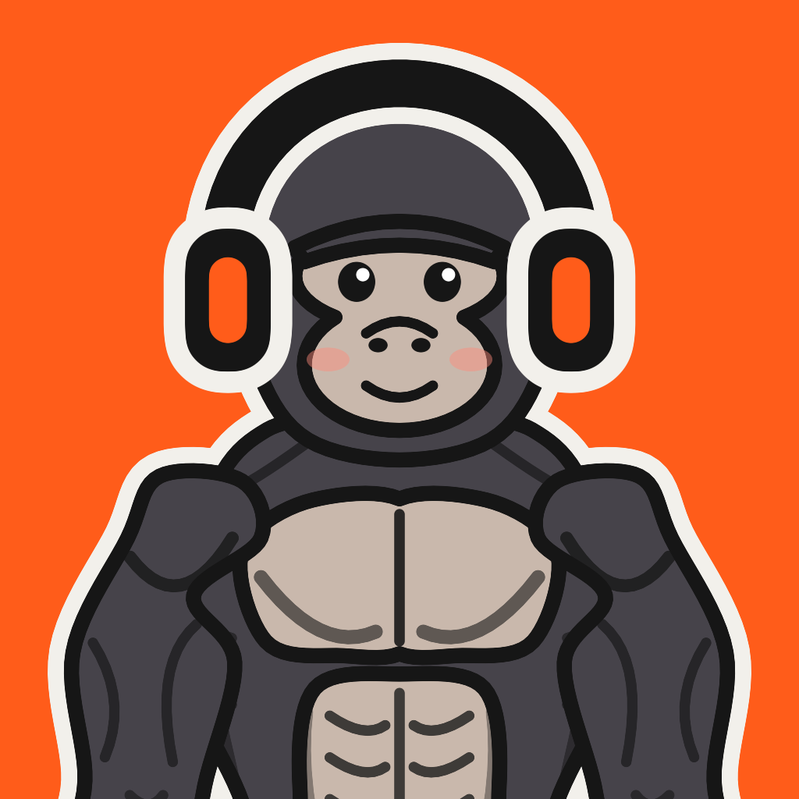
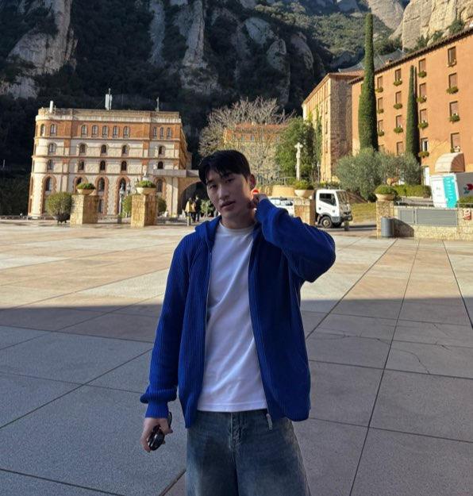
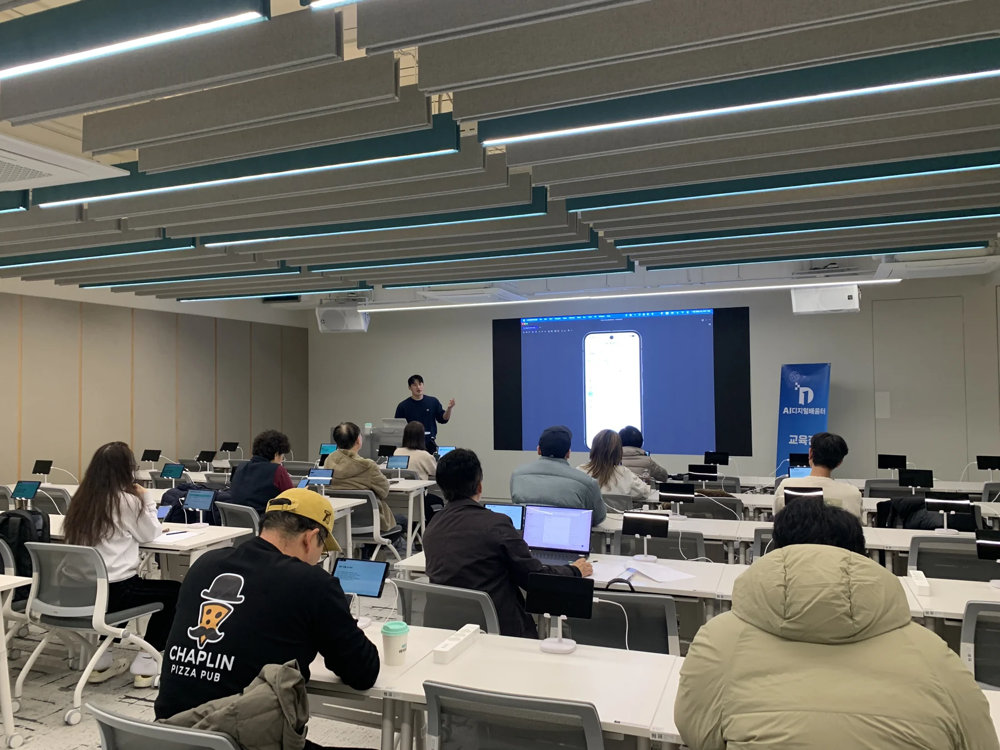

Blind Trip여행은 지금, 사진은 나중에.

고립 GoLift집중한 만큼, 자라는 나.시작은 늘, 가까운 곳에서
여행 중에는 사진보다 순간에.
운동 중에는 화면보다 움직임에.
사람의 시간이 향하는 곳을 고민합니다.
직접 만든 제품
Blind TripApp Store 출시
사진은 나중에.
여행은 지금.
찍은 사진을 바로 볼 수 없다면 어떨까요?
친구들과 한 롤을 나눠 쓰고, 여행이 끝나면
함께 꺼내 보는 필름 카메라 앱을 만들었습니다.
1인 기획 · 디자인 · 개발 · 출시
프로젝트 자세히 보기Don't check.
Just shoot.
Just shoot.

 A little wait. A better memory.
A little wait. A better memory.고립 GoLiftApp Store 출시
폰은 내려놓고,
나에게 집중.
운동하러 왔는데, 또 스마트폰을 보고 있나요?
필요한 앱만 남기고, 운동에 집중할 수 있도록.
운동할 때는
꼭 필요한 것만.
타이머와 세트 기록을 한곳에.
화면을 보는 시간은 줄이고, 운동의 흐름은 이어갑니다.
집중한 시간이
눈에 보이는 성장으로.
오늘의 운동이 나만의 고릴라를 키웁니다.
쉬었다 돌아와도, 지금까지 쌓은 노력은 그대로.


실제 출시 앱 화면 · 수치와 이름은 소개용 예시
다른 질문, 다른 시도
이런 문제도 풀어봤어요.



김상연 Sangyeon Kim조금 더, 저에 대해
생각에 머무르지 않고
일단, 만들어 봅니다.
경희대학교에서 산업경영공학을 공부합니다.
데이터로 문제를 들여다보고, 사람의 행동을 관찰하고,
직접 쓸 수 있는 서비스로 옮기는 일을 좋아합니다.
앱을 만들고 출시하는 일부터 LLM 실험 연구,
어린이와 소상공인을 위한 AI 교육, 공군 조종장학생으로서의 도전까지.
서로 다른 경험 속에서 제가 풀고 싶은 문제를 찾고 있습니다.
배움은 계속됩니다
만드는 일 바깥에서도.

배민아카데미 · 소상공인 AI 활용 교육 · 2026.11
수상과 활동 기록 더 보기
경기실록지리지 우수상
AI·SW 융합 페스티벌 장려상
경희대학교 공과대학 캐치프라이즈 공모전 최우수상
FLIP DEMO DAY 우수상
KVS 10기 성장팀 사업자금 300만 원 지원
동아리 언론지대 부회장